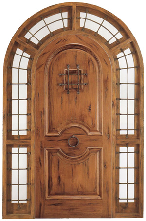

The first thing that you should know, and im sure you'll learn quickly; I'm a self proclaimed "Doork". I mean seriously I adoor me a good door. Come with me on this journey though the wonderous wold of doors and door accessories!
Loved this door so much had to put a ring on it!
Hinge me baby one more time.
Can you handle it?
I'd knock that door up.
Let’s talk history. You probably know your personal history fairly well. (If not, there are probably better things for you to do with your time than read this post!). You may know your country’s history to some extent. Some people really get into the history of war. Perhaps you majored in art history. (Once more, that probably means you have better things to be doing, such as polishing your résumé. But do you know the history of doors? Okay, I heard that! So, it’s not the most fascinating journey into history that you can take. But, trust me, it beats the pants off of the history of swine flu. Okay, so maybe that one falls under the category of fake news. Or, as those of us in the history arena like to say, “It stretches the bounds of historical literacy.” The true history of doors offers its own surprises. For example, how large was the door on Noah’s Ark? Okay, I really don’t know and even if I did, you probably don’t know your cubits from a yardstick. But I have used my extensive research skills in uncovering the true history of doors—at least from a historical records perspective. Take a look and let me know what you think. If you prefer, we could even discuss the swine flu. But I gotta tell ya, it’s a short journey from H1N1 to H2N3.